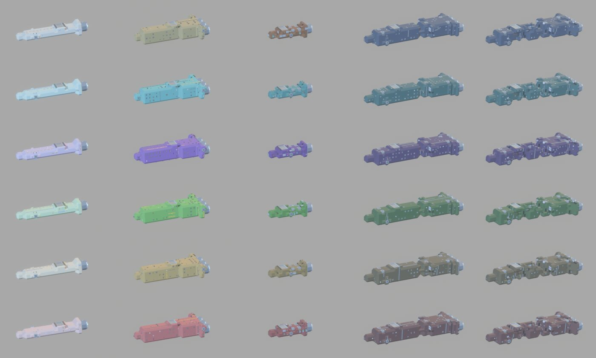
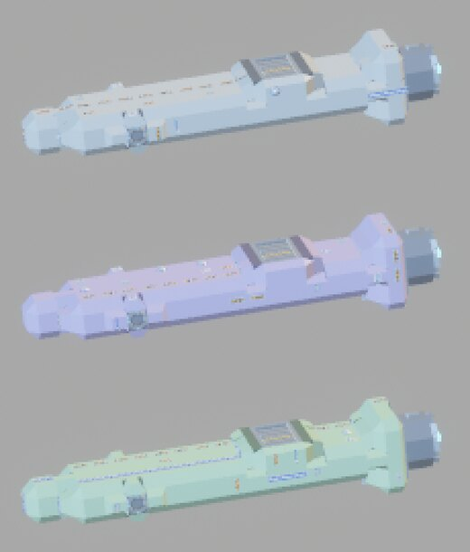
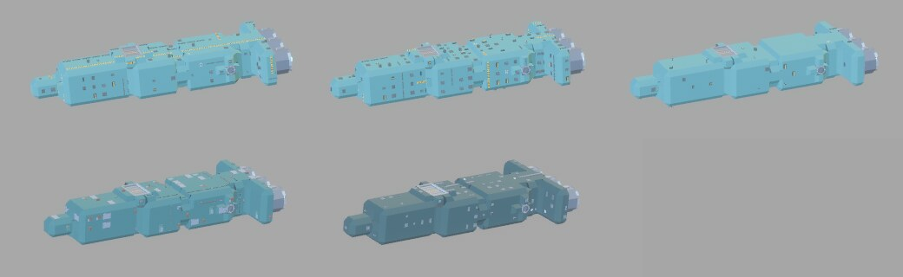
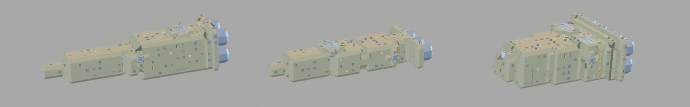
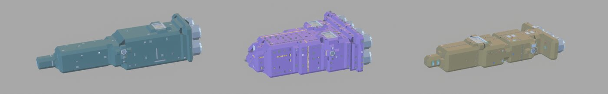

Yes to both. A civilization can have its own plating colours. It can also have its own build style, within the ranges each role already allows. The colour path is small and safe. The build style path changes what the hull generator makes, so it needs a sweep before it ships.
Owner, 2026-11-22: "do a design document ... I am curious if we can actually do different colors for factions; maybe even ships style (like the way they build the ships, maybe some factions build larger, others longer, thinner, etc different shapes + also different use of greebles)". Every option here is a proposal. The owner picks. Faction means civilization in the code. Engine unit: 1 u = 10 m = one cell.
| Question | Can we | How | Main cost or risk |
|---|---|---|---|
| Plating colour per faction | YES | The plate material is made per style id and shared by every ship that wears it. Pick a palette from the civilization at plan time and write it into the design. The design already rides in the save. | 10 civilian greeble pieces have the civilian hull colour baked into their model. Owner plan: those slots use a magenta key colour, and the greeble takes a tint input that replaces the key. |
| Greeble use per faction (density, kit accent) | YES | Density is the weight of the empty greeble in the style rules (content). A kit accent is a list of pieces from other kits, as scrap and patrol do now. | One style variant per (role kit, doctrine) pair, or a density field on the palette record. |
| Proportions per faction (longer, broader, bigger) | YES, IN RANGE | The generator already draws scale, long or broad or compact, waist and taper, cube pattern and drive layout from the hull seed. A civilization can bias those draws from its own seeded stream, as it already picks its station archetype. | Changes generator output: layout failures fail the sector; turn rate moves. Needs a sweep over many civilizations. |
| New shapes (thin parts, wedges, wings) | NO, NOT NOW | The build parts are cubes only. The start hull task listed slope, wedge and thin parts as later work. | New section art and content, out of scope. |
world seed + lattice node -> Civilization {id, centroid, status, advancement,
role_preference, stance, lawful} NO LOOK
(civilizations.rs:158-182)
|
cluster slot / station / encounter / hulls for sale
| PlannedShip.civilization (sector_ships.rs:163)
v
ShipLayoutRequest {seed, civilization, role, advancement, size} (ship_layout.rs:178-193)
| civilization only filters known parts (ship_layout.rs:1455-1461)
v
generate_ship: role_shape table + hull-seed draws -> ShipDesign
| presentation.style = role_style_id(role) (ship_layout.rs:1878,
| civilizations.rs:147-154)
v
spawn: ShipStyle(Some(id)) on the root (spaceship.rs:1815)
+-> plates: SkinAssets material per (style id, Top|Wall) (shell_skin.rs:1378-1426)
+-> greebles: style GreebleRules, solve seeded by style id, .glb pieces with
their OWN baked materials (skin_decor.rs:93, greeble_solver.rs:671)
|
freeze / save: FrozenShip.design = ShipDesignSource (inline design, style id inside)
(spaceship.rs:591-603); unvisited cells regenerate from the seed
(save/mod.rs:102-108)
| Fact | Evidence |
|---|---|
| How plating colour flows | |
A style holds the plating palette (StylePalette { top, wall }, a SurfaceFinish each), the greeble pieces and the greeble rules. A ship names one style id. | nova_ship/src/sections/skin_style.rs:85-121 |
| Generated ships and their wrecks take the style of their role only. Every civilization's scavenger is rust. | nova_world_base/src/civilizations.rs:147-154 ship_layout.rs:1878 |
Stations take the style of their archetype (ring station, spire armoured, yard industrial). The archetype is already drawn per civilization from its own stream. | station_layout.rs:188-194, :397-401 |
The six start hulls are hand-placed with a fixed style each (industrial, salvage, civilian, armoured, scrap, patrol). | nova_authoring/src/base_content/ships/block.rs:188-797 |
Plate materials are cached per style id and surface: two StandardMaterials per style, shared by every ship of that style. A missing style finish falls back to the engine plate colour. | shell_skin.rs:1372-1426 |
| The palette values are linear. The rig and tonemapper put a floor under value, so hue is the strong lever and value is weak (measured in the armoured notes). | nova_authoring/src/base_content/styles.rs:219-240 |
| Does every spawned ship know its civilization? | |
Generated traffic, intact: yes at plan time (PlannedShip.civilization), and on the entity through TraderMarket.civilization. | sector_ships.rs:163 nova_gameplay/src/market.rs:291-299 |
Station traffic: yes, the station's civilization (HullLineageType::Station). A cluster hull after the first is another civilization's 10% of the time. | sector_ships.rs:66, :141-149 |
Derelicts and wrecks: yes at plan time. The entity carries no TraderMarket, so nothing at runtime names it. | sector_ships.rs:163-176 |
| Encounter raiders, callers and wrecks: yes, the strongest civilization in reach that builds the hull. | encounters.rs:420-440, :571 |
Hulls for sale and escorts for hire: yes, generate_ship with the station's civilization. A bought hull keeps its design. | station_hulls.rs:69 nova_ship/src/sections/hull_buy.rs:1-17 |
| Player start hulls and scenario ships: no civilization. | block.rs:1-2 |
| Saved ships: the design is stored inline, style id included. A palette written into the design survives a Load with no new save field for the civilization. | nova_scenario/src/objects/spaceship.rs:591-603 ship_design.rs:126-146 |
| So: pick the palette at plan time and write it into the design. Nothing at render time has to know the civilization. | |
| How many civilizations | |
| One civilization per node of a 240 km lattice, unbounded. 70% are living. | civilizations.rs:43, :69 |
| A place is in reach (320 km) of 7 to 14 civilizations, median 10. script Sampled from the lattice and jitter constants, 2000 points; not read from the game. | civilizations.rs:43-50 |
| Each node has at most 26 neighbours (the 3x3x3 block). Ships in one cluster are the primary civilization's, plus 10% from others in reach. | civilizations.rs:93, :298-321 sector_ships.rs:66 |
| Greebles with the hull colour baked in | |
10 of 60 greeble models have a material named hull set to the civilian top colour exactly (0.42, 0.42, 0.40): civilian beacon, dish, door, fairing, fin, skylight, stripe, tank, vent, windows. On any other palette they show as pale off-white shells. script Recipe colours compared to every style palette. | scripts/greeble-recipes/civilian_*.json styles.rs:330-336 |
The patrol style already lists civilian_stripe, so the slate picket carries a pale band today. | styles.rs:678 |
Owner plan (2026-11-23): magenta key + tint. A recipe slot that must follow the hull uses the magenta key colour instead of a baked hull colour. The greeble struct (or the decor spawn) takes a tint; ship greebles get the palette Top finish for their role, ships with no palette get the style's own Top finish. A piece that misses its tint renders magenta, which shows in any frame. Lint refuses a keyed piece with no tint source, and magenta inside any palette. Any kit can opt in, for example a stripe on armoured or industrial pieces. The patrol pale band goes away because the stripe takes the patrol tint. | scripts/greeble-recipes/civilian_*.json skin_decor.rs:93-160 |
| The other kits bake their own neutral or accent colours on purpose (armoured gunmetal rail, industrial yellow, salvage weld, station shadow). They read on any hull colour. | styles.rs:236-240 |
| Material and draw cost | |
| One more palette in view adds two plate materials per role kit in view. Plate entities with the same mesh and material share an instanced draw, so ships of two palettes do not share a draw for the same plate shape. The worst case grows with (plate shapes in view) x (palettes in view). A cluster shows one civilization, sometimes two. not run | shell_skin.rs:1365-1381 |
| Greeble pieces keep their own glTF materials, so their draws do not change. Keyed slots (the 10 civilian pieces today) take one material per (piece, palette); that adds at most one draw group per keyed piece per palette. Unkeyed materials still share draws. not run | skin_decor.rs:93-160 |
| Lavapipe cost is draw count, not pixels. A sector stays under today's spread of seven styles in most clusters. Whether StandardMaterial is bindless on lavapipe (which would remove the material split) is not checked. | - |
The generator is greedy placement, not WFC. It plans a spine from a per-role table, lays cross-sections, paints one of three cube patterns, then places fittings in a fixed order and checks the result. The civilization only filters which parts it knows; it does not touch the shape.
| Knob | Today | Evidence | Per faction? |
|---|---|---|---|
| Shape | |||
| Spine size by role (length, half-width, half-height) and advancement | Table: civilian 8-40 x 1-1.5 x 0-1; industrial 8-44 x 1-2 x 1-2; scavenger 6-24 x 1-2 x 0-1; armored 9-52 x 1-2 x 1-2 cells | ship_layout.rs:1176-1186, :1907-1910 | BIAS ONLY |
| Scale | Seed draw 0.8 to 1.2 | ship_layout.rs:1912 | SAFE |
| Long / broad / compact share | Broad 15% (length x0.85, +1 width, +1 height); compact 15% on civilian and scavenger (length x0.65, +1 width) | ship_layout.rs:1913-1923 | SAFE |
| Waist or shoulder at mid, taper or flare at the stern | Seed draws, +-1 cell | ship_layout.rs:1929-1930 | SAFE |
min_aspect (length per body width) | 2.5 / 2.5 / 2.0 / 3.0 | ship_layout.rs:1176-1186 | BREAKS |
| Nose length | 1 + length / 5 stations | ship_layout.rs:1253-1255 | BIAS ONLY |
| Cube pattern (rings, deck, shell) and ring width | 0.4 / 0.3 / 0.3; width 2-4 | ship_layout.rs:1268-1281 | SAFE |
| Drive layout (centred single or mirrored pair) | 50/50 when both fit | ship_layout.rs:1568-1574 | SAFE |
| Size ceiling | 100 m to 400 m by advancement; 400 m is the sector manifest maximum | ship_layout.rs:97-101 nova_world/src/generation.rs:573 | BREAKS |
| Section budget | MAX_SHIP_SECTIONS = 2000, 100 kept for fittings | ship_layout.rs:110-125 | BREAKS |
| Mirror symmetry, fitting faces (turret top, intake top or bottom, docks on the flanks) | Enforced by check | ship_layout.rs:1196-1233, :2314-2388 | BREAKS |
| Weapon slots per role | Scavenger 1-4, armored 1-9 | nova_gameplay/src/market.rs:81-87 | BALANCE |
| Greebles | |||
| Greeble density | Weight of the empty greeble per style (industrial 5.5, armoured 6.0, civilian 5.0) and max_count caps | styles.rs:853-969 | SAFE |
| Greeble kit | Fixed by the role style; scrap and patrol already mix pieces from other kits | styles.rs:580-690 | SAFE |
| Greeble placement seed | Hashed from the style id alone | greeble_solver.rs:671 | FREE |
| Form | What it is | Save | Mods | Fit |
|---|---|---|---|---|
| Seeded doctrine | Each civilization draws its biases from id.stream(b"doctrine"), like lawful (civilizations.rs:279) and the station archetype (station_layout.rs:397-401). The generator reads them through the civilization already on the request. | Nothing new. | Cannot author a faction. | Civilizations are seeded, not authored, so this matches. |
| Authored catalog, seeded pick | A content kind (palettes, doctrines) with ids. Each civilization takes one entry by its node. Lint checks every entry. | Palette id in the design. | A mod adds or replaces entries by id. | Best for colour: a palette is an art choice and must be tuned by eye. |
| Authored per-faction content | Named factions with hand-made looks. | New faction ids. | Yes. | No: there are no authored factions to hang it on. |
| Constraint | Where it is checked | Evidence |
|---|---|---|
| Berth fit: a hull for sale must fit a free station port. | Runtime only. A hull that fits no port is not parked, with a warning. Station ceiling 100-300 m against ship hulls up to 400 m. No permanent berth census test exists (an earlier one was a disposable spike). | nova_scenario/src/objects/parked_hulls.rs:34-37, :518-525 station_layout.rs:387-392 |
| Role function: hull, flight computer, drive, intake and dock on every ship; a weapon on armed roles; cargo per hull cube. | Part rules and check. | ship_parts.rs:113-134 nova_scenario/src/objects/ship_design.rs:413 |
| Thrust and flight computer floors. | check; the bank grows to meet them. | nova_ship/src/sections/ship_measure.rs:23-26 ship_layout.rs:1505-1535 |
| Turn rate: not gated; a longer or wider hull turns slower (measured on the start hulls: 59-76 deg/s after the reshape). | Runtime physics. | nova_ship/src/sections/controller_section.rs:41 tasks/20261116-132144/TASK.md |
| Layout must not fail: a failed layout fails the whole sector. | Up to 8 attempts, then a sector fault. | ship_layout.rs:93 sector_ships.rs:33-35 |
| Generated hull tests: long for its role and inside the ceiling; floors; style per role; no medium hull in the second ring; full-advancement hulls under 2000 sections; escort raiders 20-40 sections. | Unit and integration tests, swept over a few civilizations only. | ship_layout.rs:3184, :3400, :3451 nova_authoring/tests/generated_wrecks.rs:136-150 generated_armament.rs:178-218 |
| Content lint: the role styles exist; the part snapshot builds. Generated hulls are not linted. | Arming and lint walk. | layered.rs:110-117 nova_authoring/src/lint_walk.rs:1061-1077 |
| Option | What the player sees | Cost | What dies | What may break |
|---|---|---|---|---|
| 1. Colour only | All ships and stations of one civilization share a hue. The role sets the tone (civilian pale, industrial mid, scavenger dark, armored darkest) and keeps its greeble kit, so role still reads by kit and tone. | Small to medium: a palette content kind, one field on the design presentation, a material key, the 10 baked pieces, the pick function, lint. | role_style_id as the only colour source for generated hulls and stations; the role palettes on generated hulls (start hulls keep theirs). | every_role_wears_its_style_intact_and_wrecked (ship_layout.rs:3184) changes; media with generated ships need recapture; draw count rises a little. |
| 2. Colour + greebles | 1, plus a civilization's ships are busy or bare (density), and carry one accent piece set (for example antennas from the station kit, or salvage patches). | Medium: the palette record also carries density and an accent list, or one style variant per pair. | As 1. | As 1; a dense doctrine on big hulls adds greeble entities (cost per piece is an entity with a collider). |
| 3. Colour + proportions | 1, plus a civilization builds long and lean, or broad and deep, or small, within each role's range. | Medium: a doctrine struct drawn from the civilization stream, read in plan, plus a failure-rate sweep over many civilizations and seeds. | The fixed 15% broad, 15% compact, 50/50 drive and 0.4/0.3/0.3 pattern odds. | Sector faults if a bias raises the layout failure rate; turn rate and escort difficulty move; hulls for sale fit fewer ports if biased large. |
| 4. Full doctrine | 1 + 2 + 3: a civilization has a colour, a build habit and a greeble habit. | Largest: the sum, in three slices. | As 1 and 3. | As 1, 2 and 3. |
shape-range), so a bias gives each civilization a habit. But it changes every unvisited cell and needs a failure sweep and turn-rate numbers first.palette = order[(x + 2y + 4z) mod N] with N at least 8 and order a per-world shuffle of the catalog. For any neighbour offset in {-1, 0, 1}^3 the step dx + 2dy + 4dz is between -7 and 7 and is never 0, so no two of the 26 neighbours share a palette. A function of the node and the world seed, so nothing is saved.before after (1 + 2)
plan: style = role_style_id(role) plan: style = role_style_id(role)
palette = civilization_palette(id, catalog)
design.presentation { style } design.presentation { style, palette }
ShipStyle(Option<String>) ShipStyle { style, palette }
SkinAssets materials[style][surface] SkinAssets materials[(style, palette)][surface]
greebles: .glb materials as baked greebles: magenta key slot -> tint (palette Top)
density + accent from the palette record
scrap red as a start-hull look.
min_aspect stay per role: they move berth fit, clearance and turn rate.
SPIKE FRAMES, NOT THE DESIGN. A temporary patch of screenshot_generated_ships (reverted; git diff empty). Generated hulls of seed 115, civilization node (0, 0, 0), advancement up to 0.4, in the looks rig light and grey backdrop of screenshot_base_fleet -- --looks. Faction palettes are made in the example: a hue per faction and a fixed tone per role (HSL saturation and lightness: civilian 0.20 / 0.68, industrial 0.32 / 0.42, salvage 0.36 / 0.28, armoured 0.26 / 0.20), wall a sixth of the top. The real palettes would be tuned by eye. Lavapipe, Xvfb, 1920x1080, sandboxed profile. Raw frames: ~/Pictures/nova-faction-looks/.


hull pieces (window rows, fin, dish) stay off-white. On this pale tone they barely show; on a darker or stronger tone they would read as pale patches.


Not cheap and not shown: a doctrine inside the generator (a bias on its own draws). That needs a change in nova_world_base, and a temporary crate patch in the shared checkout would leak into other lanes' builds. The seed search above stands in for it.
nova_ship: FactionPaletteConfig { id: FactionPaletteDesignId, name, roles: { civilian, industrial, scavenger, armored, station }: StylePalette } and GamePalettes; ShipStyle carries the palette id; SkinAssets keys materials by (style, palette).nova_scenario: ShipPresentationConfig.palette: Option<FactionPaletteDesignId>. None has a defined meaning: the style's own palette (start hulls, scenarios, editor). Lint refuses an unknown id.nova_world_base: civilization_palette(id, catalog) with the lattice formula; set in generate_ship, generate_wreck, generate_station; every caller through the compiler.nova_authoring: a palette builder (8 hues, no red band), content gen, lint; never hand-edit the generated RON.hull slot from (0.42, 0.42, 0.40) to the magenta key; regenerate the .glb pieces. The greeble takes a tint input; the decor spawn gives it the palette Top finish (or the style's own Top with no palette). The tint replaces the key colour outright (Rec: the recipes are flat-colour primitives, so there is no baked shading to keep; multiply would only matter for textured pieces). Lint: keyed piece with no tint source, magenta in a palette. This also fixes patrol's pale stripe.Density factor and an accent piece list on the palette record (or a sibling doctrine record). Lint: the accent pieces exist; the factor is in a stated range.
BuildDoctrine drawn from id.stream(b"doctrine"): scale centre, broad and compact share, pattern weights, drive pair share, waist amplitude. Read in plan. Ranges chosen so the tests at ship_layout.rs:3400 and :3451 hold.
| Claim | Proof |
|---|---|
| No two neighbour civilizations share a palette; the same id gives the same palette. | Unit test over the sweep seeds and every node of a block: neighbour_civilizations_never_share_a_palette. |
| A generated ship, its wreck and its station wear their civilization's palette. | Unit test in ship_layout.rs and station_layout.rs, replacing every_role_wears_its_style_intact_and_wrecked. |
| Two ships of different palettes have different plate materials; same palette shares them. | Asserted ECS example on SkinAssets. |
| Colours survive a Load. | nova-probe system flow: seeded world, save, load, compare the palette ids on the ships in a visited cell. |
| Palette content is complete and has no red band. | Lint tests on a bad palette. |
| Factions read apart. | Frames: four palettes on every role in the looks rig, plus one sector frame with two civilizations. Owner signs off. |
| Draw cost is acceptable. | nova-probe matched repeat sets on one sector, one palette against four, compared to master as the named reference. No timing assert. |
| (Slice 3) Doctrine never fails a layout. | Sweep: 200 civilizations x 4 roles x advancement steps x 32 seeds, zero failures; turn-rate table per doctrine extreme. |
Decided 2026-11-23: options 1 + 2 are task 20261120-090657; option 3 (build doctrine) is task 20261123-093539. Open: the tint replaces the magenta key or multiplies a base colour.
Ship faction palettes plus a greeble habit per civilization (options 1 + 2) in v0.19.0, with 8 palettes, no red band, start hulls unchanged, and the build habit (option 3) as a later slice?